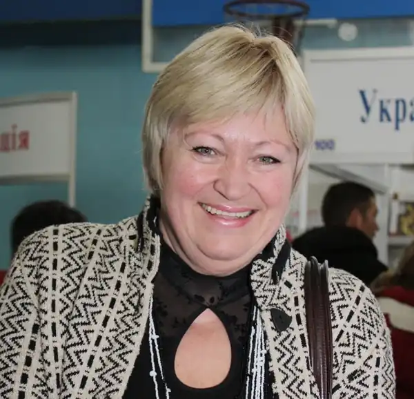
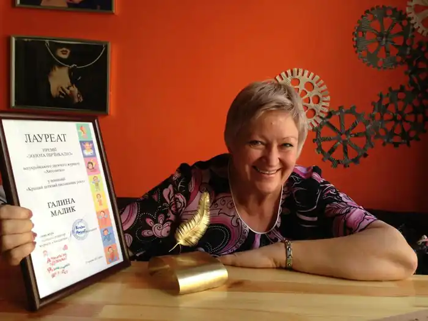

Галина Миколаївна Малик народилась 12 серпня 1951 року в м. Бердянську на Запоріжжі в сім’ї службовців. Батько був ученим агрономом, мати – педагогом. На початку 1964 року разом з батьками переїхала в селище Середнє на Ужгородщину.
Закінчила школу, потім філологічний факультет УжДУ (1980). Працювала старшим методистом відділу наукової інформації з питань культури і мистецтва Закарпатської обласної наукової бібліотеки. У 1991 році стала головним редактором видавництва "Закарпаття". У 1998 році – редактор і видавець журналу для дітей "Віночок", який відродила через 50 років і презентація якого відбулася в Ужгородській гімназії.
Пише українською і російською мовами, перекладає з болгарської. Вперше її вірші опублікувала "Закарпатська правда" у жовтні 1967 року. Друкувалася в обласних та республіканських газетах "Молодь України", "Сільські вісті", "Зірка", "Вісті України", журналах "Малятко", "Барвінок", "Перець", "Початкова школа", "Прапор", "Радянська жінка", "Веселка", колективних збірниках "Дзвінке джерело", "Первоцвіт", "Веселий ярмарок". Галина Малик – лауреат премії ім. О. Копиленка журналу "Барвінок" (1988) за повість-казку "Незвичайні пригоди Алі в країні Недоладії". Поетеса визнана також переможцем конкурсу 1987 року за твори для дітей, опубліковані на сторінці "Перченя" упродовж року. Член Національної спілки письменників України з 1991 року. Фантастична повість письменниці "Злочинці з паралельного світу" визнана кращим твором 1997 року після опублікування її журнальної версії у часописі "Барвінок" і нагороджена міжнародною премією Степана Феденка (США). За підсумками обласного творчого конкурсу "Закарпатська книга від Кирила та Мефодія до наших днів" добре відома маленьким читачам Галина Малик відзначена як автор творів для дітей (2000 рік). У 2003 році письменниця Галина Малик стала лауреатом літературної премії імені Лесі Українки. Вручення нагороди відбулося у Новограді-Волинському, на батьківщині поетеси. Галина Малик увійшла у дитячий світ надзвичайно щиро. У набутку в неї чимало книжок вийшло в Ужгороді і Києві. Авторка книжок для дітей "Страус річкою пливе" (1984), "Незвичайні пригоди Алі в країні Недоладії", "Неслухняний дощик" (1989), "Незвичайні пригоди Алі" (1997). Серед юної аудиторії стали популярні її книжки-іграшки "Пантлик і Фузя" (1989), "Королівство АНУ", "Пантлик і Фузя сперечаються", "Пригоди Іванка і Беркутка" (1990), "Чорний маг і зачароване місто" (1994) та збірка перекладів з російської мови Даниїла Хармса "Я тепер автомобіль" (1994). Повість "В стране Недо-недо" опублікована російською, а також у перекладі англійською, угорською, іспанською, італійською, німецькою, французькою мовами (журнал "Миша". Москва, 1988). Поетеса, письменниця, драматург, видавець допомагає молодим поетам і літераторам у становленні, допомагає їм у друці книг, школярів заохочує до перших проб пера. Часто приходить на зустріч з дітьми в школи, бібліотеки. Творча й неординарна особистість, головний редактор ВАТ "Видавництво "Закарпаття", лауреат премії ім. Лесі Українки, поетеса, Член Асоціації творчих жінок Закарпаття, Галина Малик розширює своє поле зору, поглиблює і збагачує погляди на життя, дозволяє повніше його відчувати. Веде активне громадське життя, яке випрозорюється новими гранями, новими рівнями спілкування, ідей, творчих задумів. Її люблять і поважають, чекають її нових творів, зустрічей з новими героями.